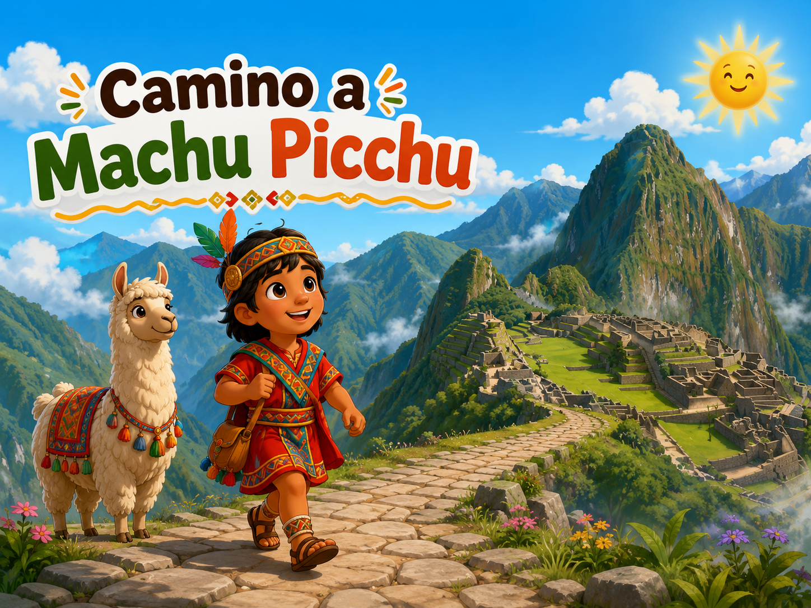
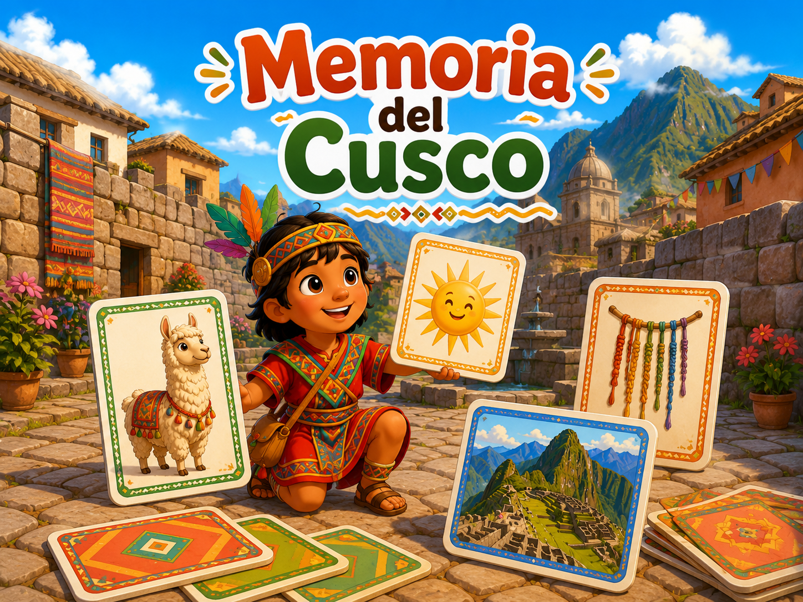
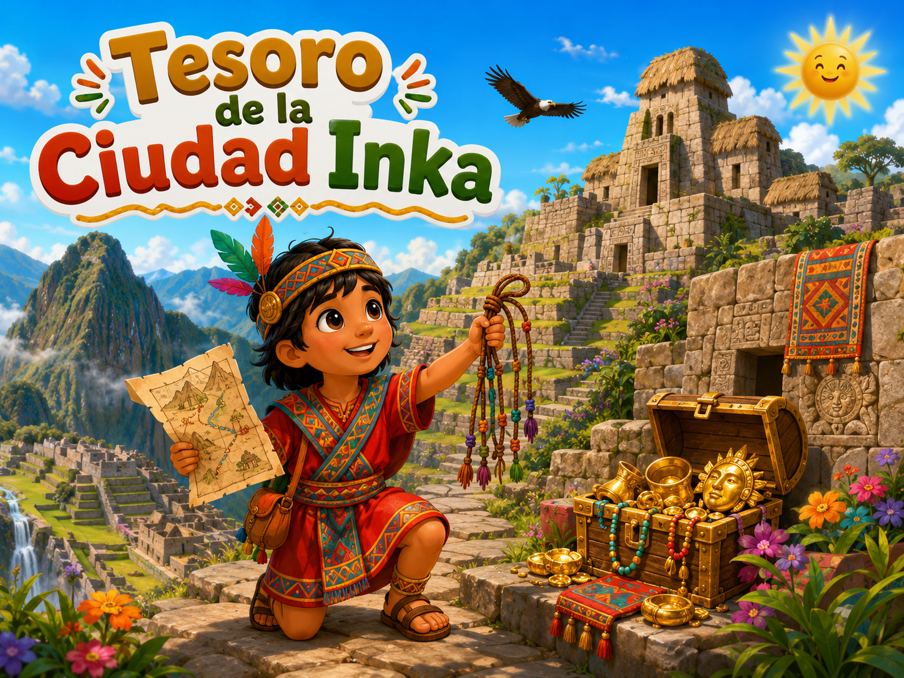

1Camino a Machu Picchu
El personaje avanza cuando aciertas y se cae cuando eliges una respuesta incorrecta.
Preguntas 3 vidas Animación
Descubre Cusco, Machu Picchu y la cultura inca mediante tres aventuras educativas con preguntas, memoria, pistas, animaciones y recompensas.
Aprende sobre Cusco y los incas mientras desarrollas memoria, atención y comprensión.

1El personaje avanza cuando aciertas y se cae cuando eliges una respuesta incorrecta.

2Voltea las cartas y encuentra parejas relacionadas con la historia y la cultura inca.

3Resuelve pistas, consigue cinco objetos y abre el cofre escondido.